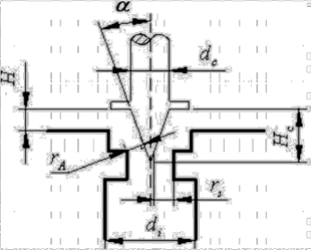

综述：电子膨胀阀制冷剂流量特征模型
阀的结构分类和功能
- （本文）针阀 (Neddle valve)：高精度调节
- 球阀 (Ball valve)：用于快速关闭或者控制
- 蝶阀 (Butterfly valve)：用于大管道流量调节，如自来水管道
- 止回阀 (Check valve)：气体或流体单向通过
本文来源
译自 Hanlong Wan, Yunho Hwang, and Saikee Oh, “A Review of Electronic Expansion Valve Correlations for Air-Conditioning and Heat Pump Systems,” International Refrigeration and Air Conditioning Conference, January 1, 2018, https://docs.lib.purdue.edu/iracc/1984.
有感：文献中虽然总结了多种用于预测电子膨胀阀质量流量的模型，但压力、温度、几何结构、制冷剂物理性质、膨胀阀的开度等等都是影响质量流量的因素，全面考虑过于复杂，模型实际上都进行了或多或少的简化。幂相关法、多项式相关法实际上就是数学中常见用于近似的级数；而人工神经网络相关法则是放弃建立近似的表达式，改用概率的思路来预测结果，减轻了确定物理原理关系的负担，但需要针对不同的情况给出大量的训练数据，在电子膨胀阀制冷剂流量方面的研究和应用相对较少。
电子膨胀阀(针阀结构)
分体式空调可通过该改变制冷剂流量来调节供热或者制冷能力，该功能一般通过控制压缩机转速和控制电子膨胀阀的开度来实现（也有通过结构上变容实现的，例如双缸变容、单缸变容）。
在电子膨胀阀之外，还有恒温膨胀阀和毛细管。毛细管的开度是固定的，恒温膨胀阀的开度取决于压力，电子膨胀阀依靠温度传感器计算所需的过热。因此电子膨胀阀响应更快，性能更佳。
下图为电子膨胀阀的基础结构，针阀的位置由步进控制器调节，步进的程度也称为开度。通过改变针阀的位置，可以控制通过电子膨胀阀的制冷剂流量。  其中，基于伯努利方程导出的单相流模型，已被广泛应用于描述电子膨胀阀中单向流的特性，其中质量流量 \(q\) \[ q = C A \sqrt{2\rho_i (p_i - p_o)} \]
$ _i $ 入口密度
\(p_i\) 入口压力
\(p_o\) 出口压力
\(C\) 流量系数，与压力、几何结构、制冷剂物理性质等有关
\(A\) 流动面积
\[ A = \frac{\pi d_c^2}{4} - \pi (H_c - H)^2 \tan^2\alpha = \frac{\pi D^2}{4} \]
\(d_c, H_c, H, \alpha\) 如图所示，\(D\) 为孔口直径，描述流动面积。 j 膨胀阀的开度→孔口直径\(D\)→质量流量\(q\)
关于制冷剂通过电子膨胀阀的流动特性的模型，主要基于以下三种方法建立：幂相关法、多项式拟合相关法、人工神经网络相关法。
幂相关法
幂相关法的核心在于用几个无量纲 \(\pi\) 群，推导出质量流量系数 \(C\) 的幂函数关联式。
\[C = a_0 \prod\limits^n_{i=1} \pi^{a_i}_i\] > \(a_i (i = 0, 1, ..., n)\) 为常数
下表为现有文献中常用的无量纲 \(\pi\) 群
| Chen et al. (2009, 2017) |
Tian et al. (2015) |
Park et al. (2007) |
Ye et al. (2007) |
Zhifang et al. (2007) |
Zhang et al (2006) |
|
|---|---|---|---|---|---|---|
| \(\pi_1\) | \(\dfrac{p_i}{p_c}\) | \(\dfrac{p_i-p_0}{p_c}\) | \(\dfrac{p_i-p_{sat}}{p_c}\) | \(\dfrac{p_i-p_{sat}}{p_c}\) | \(\dfrac{(p_i - p_o)\sqrt{A}}{\sigma}\) | \(\dfrac{p_i}{p_c}\) |
| \(\pi_2\) | \(\dfrac{T_{sub}}{T_c}\) | \(\dfrac{T_{sub}}{T_c}\) | \(\dfrac{T_{sub}}{T_c}\) | \(\dfrac{T_{sub}}{T_c}\) | \(\dfrac{\mu_f}{D_e \sqrt{\rho_i p_i}}\) | \(\dfrac{T_{sub}}{T_c}\) |
| \(\pi_3\) | \(\dfrac{C_{p_i}T_c \rho_i}{p_i}\) | \(\dfrac{\rho_i}{\rho_o}\) | \(\dfrac{\rho_i}{\rho_o}\) | \(\dfrac{C_{p_i}T_c \rho_i}{p_c}\) | \(\dfrac{p_o}{p_c}\) | |
| \(\pi_4\) | \(\dfrac{\mu_f}{D_{eq} \sqrt{\rho_i p_c}}\) | \(\dfrac{D_e \sqrt{p_c \rho_i}}{\mu_i}\) | \(\dfrac{H}{D}\) | \(\dfrac{\mu_f}{\sqrt{\rho_i p_c A}}\) | \(\dfrac{\mu_f}{\rho_i p_c D^2_e}\) | |
| \(\pi_5\) | \(\dfrac{D_{eq}}{D}\) | \(\dfrac{D_{eq}}{D}\) | \(\dfrac{D_{eq}}{D}\) | \(\dfrac{\alpha}{\pi}\) | \(\dfrac{p_{sat}}{p_c}\) | |
| \(\pi_6\) | \(\dfrac{p_{th}}{p_c}\) | \(\dfrac{D_e p_i}{\sigma}\) | \(\dfrac{D_ep_i}{\sigma}\) | \(\dfrac{\sigma}{p_c \sqrt{A}}\) | \(\dfrac{D_e p_i}{\sigma}\) | |
| \(\pi_7\) | \(\dfrac{c_{p_i} T_c}{h_i}\) | \(\dfrac{p_i - p_o}{p_c}\) | ||||
| \(\pi_8\) | \(x\) | \(x\) |
方法因作者和制冷剂而异，相关性通常用下面定义的相对偏差（Relative Deviation, RD）来评估。 \[RD = \frac{q_{pre} - q_{exp}}{q_{exp}}\] > \(q_{pre}\) 预测质量流量 \(q_{exp}\) 试验质量流量
下表为不同模型的相对偏差
| Chen et al. (2009, 2017) |
Tian et al. (2015) |
Park et al. (2007) |
Ye et al. (2007) |
Zhifang et al. (2007) |
Zhang et al. (2006) |
|
|---|---|---|---|---|---|---|
| R22 | [-5.8%, 6.2%] | [-14.5%, 14.2%] | [-10.7%, 9.3%] | |||
| R407C | [-6.8%, 9.8%] | [-9.7%, 8.7%] | [-14.2%, 22.1%] | |||
| R410A | [-6.1%, 8.5%] | [-4.2%, 11.4%] | ||||
| R134a | [-17.2%, 40.3%] | [-6.8%, 6.8%] | ||||
| R245fa | [-15%, 15%] |
多项式相关法
多项式相关法为幂相关法的简化模型，该模型认为流量系数 \(C\) 主要受过冷度和阀门开度的影响。基于该简化的质量流相关模型如下 \[ C = a_0 + a_1 x + a_2 x^2 + a_3 x \left( \frac{T_{sub}}{T_c} \right) + a_4 \left( \frac{T_{sub}}{T_c} \right) + a_5 \left( \frac{T_{sub}}{T_c} \right)^2 \]
用于评估的标准为相对误差(Relative Error, RE)和均方根值(Root Mean Square, RMS)
\[ RE = \frac{C_{pre}}{C_{exp}} \] \[ RMS = \sqrt{\frac{1}{n}\sum\limits^n_{i = 1}(RE)^2} \]
对于98%的数据，预测的 RE 值精度为 5%；在不同的情况下，RMS 值为 2%~3%。
人工神经网络相关法
人工神经网络(Artificial Neural Network, ANN) 常被用于建立几个输入和输出参数之间的未知关系。由于ANN能够在不需要显式方程的情况下解决工程应用中的物理问题，因而常被用于各个工程领域。
ANN 结构由一个输入层、几个隐藏层(实际上通常是一个或两个)和一个输出层组成。理论上输入神经元可以包括尽可能多的参数，但为了减少训练时间，需适当限制输入参数的数量。为确保确保变量的等价性，输入值(\(X_i\))和输出值(\(Y_k\))由下式归一化(\(x_i\)和\(y_k\))
\[ x_i = 2 \left( \frac{X_i - X_{i.min}}{X_{i, max} - X_{i.min}} \right) - 1 \] \[ y_k = 2 \left( \frac{Y_k - Y_{k.min}}{Y_{k, max} - Y_{k.min}} \right) - 1 \]
如果只有一个隐藏层，ANN 的过程可以由下式表示
\[ y_k = g_{output} \left\{ \sum^n_{j = 1} w'_{jk} \times \left[ g_{hidden} \left( \sum^n_{i = 1} w_{ij} x_i + b_j \right) \right] + b'_k \right\}\] > 归一化的输入参数 \(x_i\) 乘以权重 \(w_ij\)，再加上偏差 \(b_j\)，得到一个新的值 \(x'\)； > > 通过隐藏层的传递函数 \(g_{hidden}\)，获得每个隐神经元的值 \(g_{hidden}(x')\)； > > 类似地，隐藏层的值也可以诚意另一组权重因子 \(w'_{jk}\)，并于另一组偏差\(b'_k\)相加，经传递函数\(g_{output}\)获取第 \(k\)个输出参数。
下一步是训练过程，通过重复训练得到每个神经元权重系数 \(w_ij, w'_{jk}\)和 偏差\(b_j, b'_k\)的优化组，使预测数据与原始数据(如实测数据)的偏差最小，较常用的训练方法为反向传播(Back Propagation, BP)。
同济大学张春路教授团队使用了 BP 算法作为 ANN 的训练方法，采用一个隐藏层。其中输入参数四个：膨胀阀的入口压力、出口压力、入口过冷度和开度。隐层传递函数则选取了流行的 Tan-sigmoid 函数和具有较高精度的 \(n\) 阶多项式
Tan-sigmoid 函数 \[ g_{hiden}(x) = \frac{2}{1+e^{-2x}}-1 \] \(n\) 阶多项式 \[ g_{hidden}(x) = x^n\]
另外，上海交通大学谷波教授团队使用了 Levenberg Marquardt BP 算法作为训练算法，选择的隐藏层传递函数为 Tan-sigmoid 函数和 Log-sigmoid 函数
Log-sigmoid 函数 \[ g_{hiden}(x) = \frac{1}{1+e^{-x}} \]
输入参数为 8 和无量纲的参数
| \(\pi_2\) | \((p_{in}-p_{out})/p_c\) |
|---|---|
| \(\pi_3\) | \(t_{sub}/t_c\) |
| \(\pi_4\) | \(\rho_{in}/\rho_{out}\) |
| \(\pi_5\) | \(d_e \sqrt{p_c\rho_{in}}/\mu_{in}\) |
| \(\pi_6\) | \(d_e p_{in} / \sigma\) |
| \(\pi_7\) | \(c_{pin}t_c/h_{in}\) |
| \(\pi_8\) | \(d_e/d\) |
| \(\pi_9\) | \(x\) |
无量纲输出参数为 \[ y = \pi_1 = \frac{q}{d^2_c \sqrt{\rho_i}(p_i-p_o)} \]
每次移除一个输入参数，保留7个参数进行训练后发现，\(\pi_6\) 是影响 ANN 灵敏度和准确性的最重要因素，因为\(\pi_6\)在中包含表明张力 \(\sigma\)，代表亚稳态流。
两个团队评价 ANN 相关性的标准如下
平均相对误差(mean relative error, MRE) \[MRE= \frac{1}{n}\sum _{i=1}^{n}\frac{y_{pre}-y_{exp}}{y_{exp}}\] 均方根误差 (Root Mean Square Error, RMSE) \[RMSE= \sqrt{\frac{1}{n}\sum _{i=1}^{n}(y_{pre}-y_{exp})^{2}}\] 标准偏差 (Standard Deviation, SD) \[S.D.= \sqrt{\frac{1}{N-1}\sum_{i=1}^{n}(\frac{y_{pre}-y_{exp}}{y_{exp}}-MRE)^{2}}\]
总结
| 复杂度 | 精确度 | 使用程度 | |
|---|---|---|---|
| 幂相关法 | 中 | 中 | 广泛使用 |
| 多项式相关法 | 低 | 低 | 很少使用 |
| 人工神经网络相关法 | 高 | 高 | 很少使用 |
最常用为幂相关法；多项式相关法为模型简化较多，使用方便，但偏差较大；人工神经网络相关法精度较高，但目前研究及应用较少。